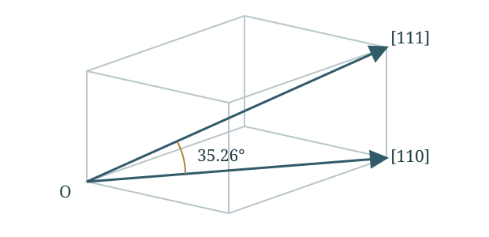
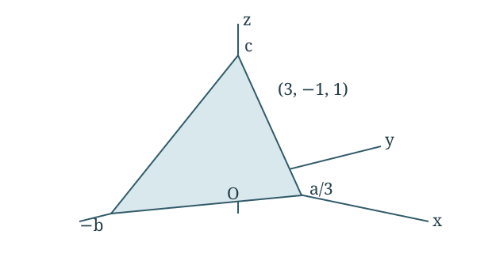

Materials Assignment 1
Part I · Worked solutions
6 questions. Equations, substitutions and final answers, with the original phase diagrams where needed.
Assignment 2 solutions → · Practice questions
Question 1 Density of MgO
One mole of MgO fills a cube with side 22.37 mm. Find density in g/cm³.
Find mass
Add the molar masses of Mg and O.
m=(1 mol)(24.305+15.999) g/mol=40.304 g Find volume
Convert the side to centimetres before cubing it.
L=22.37 mm=2.237 cmV=L3=(2.237)3=11.1943 cm3 Divide mass by volume
ρ=Vm=11.194340.304=3.600 g/cm3 Final answer
ρ=3.600 g/cm3 Question 2 Dimensions of a magnesium cube
Find the three dimensions of a cube containing 1 mol of solid Mg.
Find the volume
Use M = 24.305 g/mol and room-temperature density ρ = 1.74 g/cm³.
m=(1)(24.305)=24.305 gV=ρm=1.7424.305=13.9684 cm3 Take the cube root
All three sides are equal.
L=3V=313.9684=2.4083 cm Final answer
2.41 cm×2.41 cm×2.41 cm The handout does not supply magnesium’s density. This uses 1.74 g/cm³; use the course table if a different value is specified.
Question 3 Angle between crystal directions
Find the angle between [110] and [111] in a cubic crystal.

Diagram for this solution.Write the vectors
For cubic axes, use the indices as Cartesian components.
u=(1,1,0),v=(1,1,1) Use the dot product
cosθ=∣u∣∣v∣u⋅v=12+1212+12+121(1)+1(1)+0(1)=62 Find the angle
θ=cos−1(2/6)=35.264∘ Final answer
θ=35.26∘ Question 4 Plane intercepts
Find the axial intercepts of the (3, −1, 1) plane. The middle index has an overbar in the handout.

Diagram for this solution.Take reciprocals
For Miller indices (hkl), the intercepts are a/h, b/k, and c/l.
(h,k,l)=(3,−1,1)x=3a,y=−1b=−b,z=1c=c Final answer
(x,y,z)=(a/3,−b,c) Question 5 Vacancy fraction at 660°C
At 400°C, f₁ = 2.29 × 10⁻⁵. Find f₂ at 660°C using Q = 0.76 eV and k = 8.62 × 10⁻⁵ eV/K.
Convert temperatures
Use kelvin in the exponential.
T1=400+273.15=673.15 KT2=660+273.15=933.15 K Divide the two vacancy equations
Use f = A exp(−Q/kT). Taking a ratio removes the same prefactor A.
f1f2=Ae−Q/(kT1)Ae−Q/(kT2)=exp[kQ(T11−T21)] Substitute
f2=(2.29×10−5)exp[8.62×10−50.76(673.151−933.151)]=(2.29×10−5)e3.64936=8.8050×10−4 Final answer
f2=8.81×10−4=0.0881% Using A = 1 would not reproduce the supplied starting fraction. The ratio method uses both the initial fraction and the lecture model.
Question 6 Carbon diffusion time
Cₛ = 1.0 wt%, C₀ = 0.2 wt%, C = 0.6 wt%, x = 1 mm, and D = 2.98 × 10⁻¹¹ m²/s at 1000°C. Find time.
Form the concentration ratio
Use the constant-surface-concentration solution for a semi-infinite solid.
Cs−C0C−C0=1−erf(z),z=2Dtx1.0−0.20.6−0.2=0.5⇒erf(z)=0.5 Read the error-function table
Interpolate between erf(0.47) = 0.4937 and erf(0.48) = 0.5028.
z=0.47+0.5028−0.49370.5000−0.4937(0.01)=0.47692 Solve for time
Convert the depth to metres.
z=2Dtx⇒t=4Dz2x2t=4(2.98×10−11)(0.47692)2(0.001)2≈3.69×104 s=10.2 h Final answer
t≈3.69×104 s≈10.2 h Assumes constant surface concentration, temperature and D, and one-dimensional diffusion into a thick solid.